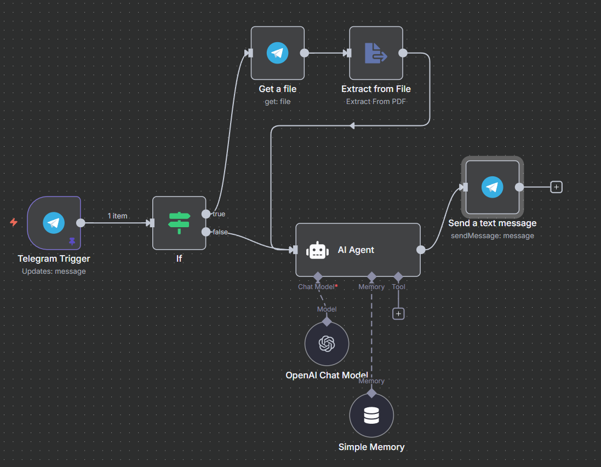

Resume reviewer
Description
I wanted to build something that makes resume writing a little less overwhelming. Many of us know the struggle of tailoring a resume for each job application, so I decided to create a Telegram bot that could review resumes in a simple, interactive way. The idea was to give users instant, role-specific feedback on their resumes without making the process feel heavy or complicated.
To make this work, I used n8n as the backbone of the workflow and connected it with OpenAI’s GPT 4.1 mini for the analysis. The bot first checks whether you’ve uploaded a file or just text. If it’s a file, the content gets extracted through the “Extract from file” node, then passed to the AI for role-based review. I also added a simple Memory node so the bot can handle longer context smoothly. Once the analysis is complete, the feedback is sent back instantly on Telegram, making the experience feel seamless. I will be keeping the bot live for a few days. Feel free to try it out and let me know your feedback. You can find it at CVanalysis_bot on Telegram. Or you can search for Resume_reviewer_bot
Technologies
n8n, Telegram Bot
Links
Workflow
